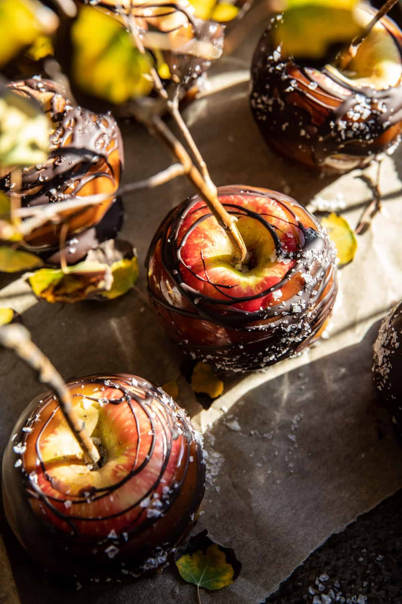

Sweet and Salty Caramel Apples

Description
Celebrating apple season with these Sweet and Salty Healthier Caramel Apples. Crisp autumn apples dipped into homemade salted maple “caramel”. Made with 5 simple ingredients, 6 if you love a little chocolate – which we do. Real maple syrup, honey, cream, and vanilla. Each caramel apple is dipped or drizzled with chocolate and finished off with a pinch of flaky sea salt. Zero processed sugars! A yummy, wholesome twist on a classic fall treat. Fun for both Halloween and Thanksgiving to come.
Ingredients List
- 6 small apples
- 1 cup pure maple syrup
- 1/2 cup honey (additional maple, if vegan)
- 3/4 cup heavy cream (canned coconut cream, if vegan)
- 1/2 teaspoon vanilla bean powder
- melted chocolate, for drizzling (optional)
- flaky sea salt (optional)
Recipe Instructions
- Insert wooden skewers or twigs into the apples. Line a baking sheet with parchment paper.
- In a medium pot, combine the maple syrup, honey, and cream. Bring to a boil over high heat. Boil 10-12 minutes or until thickened to a caramel-like sauce. It should easily coat the back of a wooden spoon. Remove from the heat and stir in the vanilla and a pinch of sea salt.
- Very carefully transfer the caramel to a heat-proof bowl.
- Working quickly, swirl the apples in the caramel, then place on the prepared baking sheet. Repeat with remaining apples. If the caramel stiffens too much to dip, warm for 15-20 seconds in the microwave to loosen it back up.
- Let the caramel set, about 10-15 minutes, then dip/drizzle each apple with melted chocolate. Let the chocolate harden, then enjoy! The apples will keep in the fridge for about 1 week.